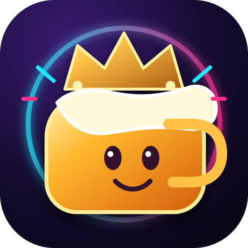

Điều khoản sử dụng & bản quyền
Vua Bàn Nhậu là ứng dụng giải trí dành cho người từ 18 tuổi trở lên. Phiên bản số được phát triển và biên soạn bởi NiQuitin. Các ý tưởng và luật chơi quen thuộc có thể đã xuất hiện từ trước; NiQuitin không tự nhận đã sáng tạo ra các trò chơi gốc đó.
1. Phạm vi và mục đích
Ứng dụng tập hợp các trò chơi tương tác cho nhóm bạn nhằm mục đích giải trí. Đây không phải dịch vụ tổ chức uống rượu bia, tư vấn y tế hoặc lời mời thực hiện hành vi nguy hiểm. Mọi người có thể chơi bằng nước, đồ uống không cồn hoặc thử thách không liên quan đến đồ uống.
2. Ghi nhận người phát triển
NiQuitin là biệt danh ghi nhận người phát triển và biên soạn phiên bản ứng dụng số mang tên Vua Bàn Nhậu. Ghi nhận này không có nghĩa NiQuitin là người phát minh ra mọi luật chơi, trò chơi truyền thống hoặc ý tưởng được tham khảo.
3. Quyền tác giả và ý tưởng trò chơi
Các trò như vòng quay, xúc xắc, xoay chai, rút thẻ, trò đoán số và nhiều hình thức giải trí tương tự đã được cộng đồng biết đến trước ứng dụng này. Ứng dụng xây dựng các cách thể hiện và cơ chế tương tác số riêng; không tuyên bố sở hữu độc quyền ý tưởng, phương pháp hoặc luật chơi phổ biến.
Quyền đối với tác phẩm gốc, tên thương mại, nhãn hiệu, giao diện độc đáo, nội dung chữ, hình ảnh, âm thanh, mã nguồn và tài nguyên bên thứ ba — nếu có — vẫn thuộc chủ sở hữu hợp pháp tương ứng. Việc nhắc đến một loại trò chơi không ngụ ý có quan hệ hợp tác, tài trợ hoặc chứng thực từ bên sở hữu sản phẩm gốc.
Thông báo này không phải giấy phép sử dụng tài sản của bên thứ ba và không tự động loại trừ trách nhiệm khi có vi phạm quyền sở hữu trí tuệ.
4. Chơi có trách nhiệm — từ 18 tuổi
- Người dưới 18 tuổi không được sử dụng rượu bia; ứng dụng hướng tới người chơi từ 18 tuổi trở lên.
- Không xúi giục, kích động, lôi kéo hoặc ép buộc người khác uống rượu bia hay tham gia thử thách.
- Người chơi có quyền bỏ qua hoặc dừng bất cứ lúc nào, không cần giải thích.
- Ưu tiên nước, đồ uống không cồn hoặc thử thách nhẹ nhàng; không có yêu cầu bắt buộc dùng đồ uống có cồn.
- Không uống rồi lái xe hoặc vận hành máy móc; không tổ chức thử thách gây tổn thương thể chất, xúc phạm, quấy rối hay xâm phạm quyền riêng tư.
5. Sức khỏe và an toàn
Người tham gia tự cân nhắc thể trạng, điều kiện an toàn và sự đồng thuận của mọi người. Không chơi khi cảm thấy không khỏe hoặc có nguy cơ mất an toàn. Không xem bất kỳ án phạt, thời lượng hoặc chỉ dẫn trong game là hướng dẫn về mức uống rượu bia an toàn.
6. Giới hạn trách nhiệm
Ứng dụng được cung cấp phục vụ giải trí theo điều kiện kỹ thuật thực tế. Có thể phát sinh lỗi hiển thị, mất kết nối, kết quả ngẫu nhiên hoặc mất dữ liệu cục bộ khi thay đổi trình duyệt, xóa dữ liệu hay ứng dụng bị dừng đột ngột. Trong phạm vi pháp luật cho phép, người phát triển không bảo đảm dịch vụ hoạt động không gián đoạn và không chịu trách nhiệm đối với hậu quả từ việc người dùng cố ý sử dụng sai mục đích hoặc vi phạm pháp luật.
Các giới hạn nêu trên không loại trừ những nghĩa vụ hoặc trách nhiệm mà pháp luật không cho phép loại trừ.
7. Quyền riêng tư và dữ liệu
Cài đặt và lịch sử phiên có thể lưu trên chính thiết bị. Dữ liệu tại một tên miền không tự chuyển sang tên miền hoặc ứng dụng khác. Đọc chi tiết tại Chính sách quyền riêng tư.
8. Thành phần bên thứ ba
Ứng dụng có thể dùng thư viện hoặc phông chữ theo giấy phép riêng. Xem trang Thông báo thành phần bên thứ ba. Các thông báo này không cấp thêm quyền sử dụng những hình ảnh, âm thanh hoặc thương hiệu không được cấp phép.
9. Yêu cầu liên quan đến bản quyền
Nếu bạn là chủ sở hữu quyền và cho rằng một thành phần cụ thể xâm phạm quyền của mình, vui lòng liên hệ qua kho mã công khai của dự án trên GitHub, kèm đường dẫn/trò chơi liên quan và nội dung cần xem xét. Không đăng thông tin cá nhân nhạy cảm hoặc tài liệu bản quyền mật trong báo cáo công khai. Nhà phát triển sẽ xem xét phản ánh có căn cứ và chỉnh sửa, ghi công hoặc gỡ nội dung khi phù hợp.
10. Thay đổi điều khoản
Các điều khoản có thể được cập nhật khi nội dung game, thành phần phần mềm hoặc quy định pháp luật thay đổi. Bản hiện hành được công bố tại địa chỉ này. Nếu có tranh chấp cụ thể, cần tham khảo chuyên gia pháp lý có chuyên môn.
Quay lại Vua Bàn Nhậu